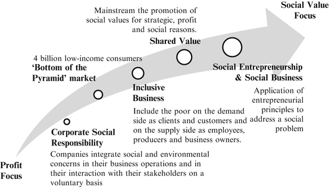

20.1 Introduction
Extreme poverty is an immense political and market failure, wasting the potential of hundreds of millions of people (von Braun 2010). Investing in the creation of markets that include the extremely poor and marginalized should thus not only be considered as a charitable activity, but also has the potential to provide high returns on investments—in both financial and humanitarian terms. Various new business approaches have begun to fill these investment gaps, some led by well-known figures such as Muhammed Yunus, Michael Porter, Mark Kramer, and C. K. Prahalad on the one hand, and innumerable individual social entrepreneurs on the other, who together have brought the creation of social value into mainstream business thinking.
While the potential of these approaches for targeting the poor that are close to poverty lines is increasingly being recognized, the question remains: to what extent can business also help the extremely poor? In his influential book, The Fortune at the Bottom of the Pyramid, Prahalad (2010, 8) acknowledges that “[t]here is a segment of the 4 billion who are so destitute, so deprived, and so consumed by war and disease that they need other forms of help,” such as government subsidies, multilateral aid, or philanthropy. How far can business approaches push the margin to also include those who are extremely poor? How can those who are currently excluded from development opportunities be brought into and benefit from market-based systems to improve the quality of their lives? These are the questions that we examined in this chapter.1
What characterizes the extremely poor from the perspective of business? In some respects their situation is similar to that of the general poor, albeit more severe. As consumers their purchasing power is extremely low and they often struggle to follow regular payment schedules due to income fluctuations. While many may already operate in commercial markets, for instance by selling their time or engaging in small-scale trading, returns tend to be low due to limited skills and assets. These constraints, along with the lack of access to credit and additional barriers that may result from discrimination or spatial remoteness, also restrict their ability to expand their business activities.
In other respects extreme poverty has particular characteristics, as highlighted by the extensive work undertaken by BRAC in Bangladesh to engage the ultra-poor. BRAC notes that the extremely poor are often subject to overlapping sets of constraints and deprivations that make them “structurally different from other categories of the poor; they are not only poorer than others, but differently so” (Matin et al. 2008, 5). Their main priority is survival, with little time or extra resources to invest in long-term strategies. As a result they get caught in “[a] below-subsistence trap from which it is difficult for them to break free using available resources and mechanisms” (Matin et al. 2008, 2).
The extremely poor are often marginalized, which also prevents them from realizing their potential (for an overview on marginality and extreme poverty issues see Gatzweiler et al. 2011). We define marginality according to Gatzweiler et al. (2011, 3) as:
an involuntary position and condition of an individual or group at the margins of social, political, economic, ecological and biophysical systems, preventing them from access to resources, assets, services, restraining freedom of choice, preventing the development of capabilities, and eventually causing extreme poverty.
As we know that the large majorities of the marginalized and extremely poor live in rural areas of the developing world and typically depend directly or indirectly on agricultural, forestry, and fishery based livelihoods, any commercial efforts to address extreme poverty must consider these circumstances. Other cross-cutting aspects of marginality are the adverse health and nutritional conditions of the extremely poor, as well as their lack of access to education and information.
The increasing interest in business approaches to combat poverty stems from a long history of debate on the role of businesses in society, some of which traces as far back as India’s Kautily in the fourth century BC, and also nearly 200 years later to Cicero in Rome (Blowfield and Frynas 2005). During the Industrial Revolution entrepreneurs like John Cadbury, Robert Owen, and Léon Harmel took measures towards solving the problems of feeding, clothing, and employing a great number of people, trying to improve the working and living conditions of workers and their families (Boddice 2009). Over the past four decades the business world has evolved from “command and control” approaches to addressing environmental and social issues, towards the pro-active application of business strategies to pursue social goals.
Especially in recent years the proposition has been gaining ground that firms and investments can be profitable and possibly even improve the competitive position of companies when the creation of social value is integrated as a core business activity (Porter and Kramer 2011). This marks an important step on the path of the private sector from “being less bad” towards “being more good” (McDonough and Braungart 2002). In the meantime the recognition that governments and traditional development assistance mechanisms have still not solved the alarming problems of poverty has also been growing. Indeed, much criticism has been leveled at the perceived failures and inefficiency of many governmental and non-governmental development programs and official development aid in recent years.
In this chapter we outline this evolution of thinking in the business world and explore in detail some of the relatively new business approaches that have emerged for addressing societal problems. Furthermore we specifically examine whether and how these approaches can support not only the lower-income and near poverty line classes, but also help bring the marginalized at the lowest end of the income scale into market-based systems in meaningful ways.
20.2 Business and Social Values
In the past public discourse and research agendas on the social roles of business have been largely dominated by North American and European perspectives, in particular through the concept of corporate social responsibility (CSR). However, the underlying idea of CSR (i.e., that companies have responsibilities towards society), is not a “northern” phenomenon, even if the terminology is (Frynas 2005). Indeed, examples from Africa show that businesses are often expected to assist the communities in which they operate and that they are perceived to be part of (Frynas 2005; Idemudia 2010).
Recently leading business thinkers have stressed the benefits to companies of integrating social considerations into core business strategies rather than treating them as external add-ons, as is common in CSR. For instance, this can be done by targeting low-income consumers (“bottom of the pyramid” markets) or strengthening supply and distribution chains through the involvement of local communities as part of inclusive business strategies. Others—most notably Muhammed Yunus and other social entrepreneurs who seek to launch new enterprises that directly address problems of poverty and sustainability—are taking this argument one step further, advocating the use of business strategies as a primary means to address social goals, rather than simply for financial gain. Thus in discussions on the role of business in society, profit maximization as the primary objective of business operations is increasingly making way for business initiatives that are guided by social objectives, whether or not they make a profit (see Fig. 20.1 for a summary of business approaches presented in this section).

Fig. 20.1
Business approaches to poverty reduction
Moreover debates on the role of business in society are moving out of “Western-dominated” circles to the global level, exemplified by the emergence of new propositions from leading thinkers in the developing world and growing hubs of social business activity in low-income countries such as India and Bangladesh. This shift has helped stimulate a more constructive and practical approach to private sector engagement in development, which remains colored by skepticism about businesses’ motives and commitments to social goals.
20.2.1 Corporate Social Responsibility
The term “corporate social responsibility” began to be widely used in the 1960s and 1970s, coinciding with the rise of multinational companies. There is no standard definition of CSR. One of the most commonly cited definitions comes from the European Commission (EC), which refers to CSR as “a concept whereby companies integrate social and environmental concerns into their business operations and in their interaction with their stakeholders on a voluntary basis” (EC 2011, 6).
More generally Blowfield and Frynas (2005, 503) regard CSR as:
an umbrella term for a variety of theories and practices, all of which recognize the following:(a)that companies have a responsibility for their impacts on society and the natural environment, sometimes beyond legal compliance and the liability of individuals;(b)that companies have a responsibility for the behavior of others with whom they do business (e.g., within supply chains); and(c)that businesses needs to manage their relationships with broader society, whether for reasons of commercial viability or to add value to society.
The terminology and publicized approaches to CSR are largely shaped by Anglo-Saxon tradition, with its differentiation between economic and social affairs, focus on individualistic rather than community values, and the limited role of government in regulating markets (Blowfield and Frynas 2005; Sadler and Lloyd 2009). Proponents of CSR tend to emphasize the benefits of volunteerism and self-regulation as more effective means to promote socially responsible corporate activities. For instance, the Department for International Development (DFID) in the UK (2003, 9) warns that “international legally-binding frameworks for multinational companies may divert attention and energy away from encouraging corporate social responsibility and towards legal processes.”
The “northern-centered” view of CSR has driven research agendas over recent decades, which has largely concentrated on firms in high-income countries, notably in North America and Europe, and the adoption of universal norms such as workers’ rights. These approaches have also shaped the way that CSR is being applied in developing countries. As Blowfield and Frynas (2005, 504) note, “by the time empirical studies started to be commissioned to investigate whether CSR could benefit the poor and marginalized, certain conventions and orthodoxies had already been established.” Thus development related CSR emerged largely as a response to growing criticism of multinational companies from activists, consumers, and shareholders about poor labor and environmental standards, and associated impacts on local communities. An initial focus on codes of conduct and voluntary company-level standards has expanded to include ethical sourcing, certifications, community development, and stakeholder engagement.
While NGOs were a key driving force behind promoting CSR in the 1990s, they have become increasingly critical, accusing some companies of using CSR as “green wash” for unsustainable business practices and/or to avoid regulations. For instance the UK-based NGO Christian Aid (2004, 14) acknowledges that civil society groups, through their support for CSR, “have unwittingly enhanced company images and market profiles.” They suggest that instead, “NGOs may be more effective by throwing their collective weight behind the drive for international regulation than by tying up their scant resources in bilateral dialogues.”
Critics also point to the gap between CSR rhetoric and practice, exacerbated by the lack of measurement approaches to assess impacts (Utting 2007). CSR activities are often seen as cosmetic rather than operational or strategic, summarized in reports that “aggregate anecdotes about uncoordinated initiatives to demonstrate a company’s social sensitivity” (Porter and Kramer 2006, 79). The focus, it is claimed, is on mitigating tensions between companies and society rather than on recognizing their interdependence and working for their mutual benefit. As a result the “potential of companies to take actions that would support both their communities and their business goals” is lost (Porter and Kramer 2006, 81).
The promotion of CSR as a development tool has also attracted criticism. Specifically it is argued that CSR neglects issues related to the power dynamics and political economy of the contexts in which the companies operate. In particular marginalized groups are often left out of CSR activities, thus they are unable to engage in stakeholder dialogue or express their concerns when their interests do not coincide with NGO, donor, or company priorities. This can be particularly problematic where the choice of CSR activities is primarily driven by business considerations. As Blowfield and Frynas (2005, 508) point out:
[s]ince inclusion in or exclusion from stakeholder status is not based on either legal rights or moral obligations, a stakeholder’s recognition is contingent upon the business case for that recognition. Consequently, the well-being of some groups in developing countries may be jeopardized by the very pursuit of CSR.
Similarly, lacking contextual analysis can result in projects that may promote business interests rather than social development priorities. For instance Idemudia (2010, 841) concludes that basing choices of CSR projects on business logic rather than on local needs has “contributed to the breakdown of traditional institutions and the proliferation of failed development projects in the Niger Delta.” At the same time it is argued that CSR may reinforce corporate power by offering companies an excuse to avoid regulations and strengthening their influence by providing them the space to lead and shape the CSR movement (Utting 2007). The economic roles and political influence of multinational corporations, however, is not fundamentally questioned in the CSR agenda. Critics also note that CSR only addresses some of the symptoms of poverty, but ignores underlying development challenges. Utting (2003, 7) stresses that:
if large corporations are to contribute in a meaningful way to social and sustainable development, the CSR agenda needs to address the central question of the structural and policy determinants of underdevelopment, inequality and poverty, and the relationship of [multinational corporations] to these determinants.
Even companies that are implementing CSR activities ostensibly for development reasons may at the same time lobby for tax reductions, outsource parts of the value chain to avoid compliance with labor or environmental standards, or destroy local livelihoods through their business activities (Utting 2007; Idemudia 2010).
More recently the rhetoric in the CSR debate—and in broader discussions on the role of business in society—has shifted from mitigating the negative impacts of business towards the positive role that business can play in advancing development and poverty reduction. This shift is also being promoted by leading international development organizations such as the DFID, the Netherlands Development Organisation (SNV), the World Bank, and the UNDP (Prieto-Carrón et al. 2006). It is acknowledged that it may be unrealistic to expect too much of CSR. Indeed CSR “was never conceived as a tool to tackle poverty” (Newell and Frynas 2007, 678). Rather, recent debates on how to strengthen the role of business in development have focused on the need for new business strategies where social objectives are a core element or even the primary goal of business operations.
20.2.2 “Bottom of the Pyramid” Market
The introduction of the “bottom of the pyramid” (BOP) concept by Prahalad and Hart in 2002 marked a milestone in the debate surrounding the role of business in promoting social goals and poverty reduction. By highlighting the “fortune” that lies at the four billion strong bottom of the income pyramid, they succeeded in attracting the attention of the business world to recognize and investigate the market opportunities offered by the “billions of aspiring poor who are joining the market economy for the first time” (Prahalad and Hart 2002, 1). The BOP argument thereby places the complementarities of social and corporate objectives at the heart of business strategy.
While the proponents of the BOP market highlight the potential of this group as both producers and consumers, the business case initially focused largely on the poor as consumers (Prahalad and Hart 2002; Hammond et al. 2007; Prahalad 2010). The BOP market is usually defined by income, with an annual per capita income limit ranging from US$1,500 to 3,260 (Table 20.1).
Table 20.1
Delineation of the bottom/base of the pyramid market—in US$, income in purchasing power parity (ppp)
Annual per capita income | Number of people | |||||
|---|---|---|---|---|---|---|
1 | 2 | 3 | 1 | 2 | 3 | |
High income | >$20,000 | >$20,000 | >$20,000 ($21,731) | 75–100 million | 100 million | No data |
Middle income | $1,500–20,000 | $2,000–20,000 | $3,000–20,000 | 1,500–1,750 million | 2 billion | 1.4 billion |
BOP | <$1,500 | <$2,000 | <$3,000 (<$3,260) | 4 billion | 4 billion | 4 billion |
Hammond et al. (2007) characterize what they refer to as the BOP as people with significant unmet needs, including access to finance, housing, water, sanitation, electricity, and health services. BOP populations are largely dependent on informal or subsistence livelihoods with limited access to markets, and in rural areas are highly vulnerable to the destruction of natural resources that their livelihoods depend upon. They are often subject to a “BOP penalty” in the form of higher prices and lower quality of goods and services than more affluent consumers due to living in remote areas and limited purchasing power (see also Gradl and Knobloch 2010). Elaborating on the nature and potential of the BOP market, Prahalad (2010) argues that although individual consumers may have low purchasing power, the market is nevertheless lucrative due to its sheer scale. Contrary to widespread assumptions, BOP customers are ready to adopt new technologies and are brand conscious—and thus are also potentially attractive to multinational companies. The use of local distribution systems and modern communication technologies has greatly facilitated access to BOP customers. Capitalizing on this market will require companies to adapt their business strategies to the needs of BOP customers, for instance by creating the capacity to consume (e.g., through changes in packaging, pricing, or payment schedules) and by developing new goods and services.
Assessments of the size of the BOP market vary. Prahalad (2010) estimated the global BOP purchasing power to amount to as much as US$13 trillion annually. A detailed assessment carried out by the International Finance Corporation (IFC) and the World Resources Institute (WRI) valued the global BOP market at US$5 trillion annually (Hammond et al. 2007). The World Economic Forum put the annual income of the BOP population at US$2.3 trillion, and predicted that this income could increase to US$4 trillion by 2015 (WEF 2009). Among the four billion, the largest segment (1.6 billion) was found to be located in the middle tier, earning around US$1.00–2.50/day, while one billion people earned less than US$1/day, and 1.1 billion earned US$2–8/day (WEF 2009). In comparison the 1.4 billion strong mid-level income market is estimated to be worth US$12.5 trillion (Hammond et al. 2007).
Hammond et al. (2007) break down the BOP market geographically and by sector. They concluded that the largest segment of the market is found in Asia with 2.86 billion people and an income of US$3.47 trillion, representing 82 % of the region’s population and 42 % of the purchasing power. The region with the highest share of the general population in the BOP market is Africa, where 95 % of the people (486 million) have an estimated combined income of US$429 million. In Latin America the BOP market consists of 360 million people with an income of US$509 billion, representing less than a third of the regional household income (28 %).
In terms of sectors, Hammond et al. (2007) identify food as the largest market by far, valued at US$2.9 trillion. Also important are energy (US$433 billion), housing (US$332 billion), transportation (US$179 billion), and health care (US$158 billion). The information and communication technologies sector were estimated at around US$51 billion, which the authors acknowledge could in reality be as much as twice that amount given rapid growth. The water market sector is estimated at US$20 billion. BOP markets for water, information and communication technologies, and housing are predominantly urban in all regions, while food and health care markets are predominantly rural in most Asian and African countries. In Asia the dominant rural market sectors were energy and transportation.
Karnani (2009) on the other hand, contends that claims about the BOP market are wildly exaggerated. He maintains that most of the successful examples of selling to the BOP market are in fact targeting the middle class rather than the poor. He argues that the size of the market is overestimated because of the high per capita income cut-off of US$3,000/year (US$8/day) used by the IFC/WRI study, which is considerably higher than the commonly used poverty line. He notes that “[a]ccording to this report, 98.6 % of the population in India is in the bottom of the pyramid,” (Karnani 2009, 7). Using US$1,000 annually per capita as the poverty threshold, he estimates the BOP market to amount to US$1.2 trillion at purchasing power parity (PPP), and just US$0.36 trillion at market exchange rates.
For Prahalad (2010) the exact delineation of the BOP market and even the terminology used to describe it—be it “base of the pyramid,” the “next billion,” or the “bottom billion”—are secondary. Reflecting on the debates sparked by the introduction of the concept, he acknowledges that “there is no single universal definition of the Bottom of the Pyramid that can be useful.” The fact remains that it is widely recognized that “four billion micro consumers and micro producers constitute a significant market and represent an engine of innovation, vitality, and growth,” and companies can choose to serve any segment of this market (Prahalad 2010, 7).
A more fundamental criticism of the BOP approach, however, is whether access to consumer goods and services will necessarily bring developmental benefits. Karnani (2009) argues that it is empirically false to view of the poor as “resilient and creative entrepreneurs and value-conscious consumers” (Prahalad 2010, 25). Karnani cites research by Banerjee and Duflo (2007) showing that the poor, just like any consumer, do not necessarily make purchasing decisions that are most beneficial for the health and food security of the individual or household. He points out the case of Unilever’s Fair and Lovely skin-whitening cream—an example cited to highlight the success in servicing BOP markets (Prahalad 2010)—as a product of dubious value to the well-being of poor consumers and which he claims in fact further sustains racist and sexist prejudices. Thus Karnani (2009, 4) concludes that “there is a need to impose some limits on free markets to prevent exploitation of the poor.”
In response Prahalad (2006, 2) maintains that “consumption can and does increase income.” He also notes that it is ultimately up to the poor to choose what to spend their money on. As already noted above, he does acknowledge that access to markets will not provide a solution for all, and that the poorest will continue to rely on outside help from governments and donors. Even for this segment though, the goal would be to “build capacity for people to escape poverty and deprivation through self-sustaining market-based systems” (Prahalad 2010, 8).
20.2.3 Inclusive Business
Another recent incarnation of the BOP approach is “inclusive business,” or “inclusive markets,” that emphasize the benefits of engaging the poor along the entire supply chain. Inclusive business models can include the poor on the demand side as clients and customers, and also on the supply side as employees, producers, and business owners.2 Among the main advocates of this approach is the UNDP, which—as a follow up to the 2004 report of the Commission on the Private Sector and Development—set up the Growing Inclusive Markets Initiative in 2006 with the aim of better understanding, “how the private sector can contribute to human development and to the Millennium Development Goals” (UNDP 2008, v).
The UNDP argues that engaging the poor can be beneficial for both businesses and poverty alleviation. Business can profit through (potentially) high rates of return, opening up new markets, innovation driven by the challenges of developing inclusive markets, expanding labor pools, and strengthening supply chains through local sourcing. The poor in turn will benefit through greater access to essential goods and services, income generation, and empowerment. The UNDP acknowledges that inclusive markets also pose serious challenges that need to be addressed, such as limited market information, ineffective regulatory environments, inadequate physical infrastructure, a general lack of knowledge and skills, and restricted access to financial products and services.
Inclusive business has also found strong support in the business community and among some donors. The World Business Council on Sustainable Development (WBCSD), in an alliance with the SNV, is promoting inclusive business models that are both profitable and that have a clear development benefit for the low-income segment of the population (SNV/WBCSD 2008). The IFC, which explicitly links the BOP and inclusive business approaches, committed US$780 million to more than 35 clients with inclusive business models in 2009, while more than 150 active clients were in its portfolio (Jenkins et al. 2010).
An assessment of 14 inclusive business models published by the IFC and Harvard University’s Kennedy School of Government highlights a number of common themes (Jenkins and Ishikawa 2010). This study found that expected growth was the main driver for businesses to develop such models. The most common outcome for businesses has been revenue growth, while the main development outcomes for the poor have been expanded economic opportunities (as suppliers, distributors, or retailers), and improved access to goods and services. Factors contributing to their success have included: network and technology platforms that reach low-income consumers; financing schedules that match the cash flows of poor individuals and households; capacity building among suppliers, consumers, and distributors; and partnerships with other companies, governments, or finance institutions.
20.2.4 Creating Shared Value
In their discussion of the concept of “Shared Value,” Porter and Kramer (2006, 2011) take the argument for the private sector’s role in advancing human development and poverty alleviation one step further by arguing that it is in fact in the interest of all businesses to be promoting social values—for strategic, economic, and social reasons. Thus rather than creating special “social” entities that address issues such as poverty or environmental damage, they call on companies to bring business and society back together by addressing societal and environmental concerns related to their products, and designing production processes that benefit workers and their families. They argue that it is not a matter of altruism to commit to this change, but a strategic advantage that pays off in the mid- to long-term.
The idea of factoring social and environmental objectives into business strategies for commercial reasons—to increase labor productivity, to ensure the stability and quality of production inputs, or to respond to consumer demand—is not new. As far back as the eighteenth century some of the early industrial entrepreneurs promoted improved working conditions to enhance labor productivity. More recent examples include company programs to address HIV/AIDS awareness and health care, improve smallholder productivity, or sell ethics-based certified products to affluent markets. What sets Porter and Kramer’s approach aside from these initiatives is the call for a fundamental rethinking of business strategy, rather than piecemeal activities for a limited part of business operations or public relations purposes.
“Creating Shared Value” has been most publicly embraced by Nestlé (2012; Christiansen, Chap. 21 this volume), recognizing that “in order to be successful, a company must create value for its shareholders and at the same time for the communities where it operates and for society at large.” Nestlé notes that this approach goes beyond ensuring compliance and sustainability to consider how sound business principles can create value for both shareholders and for society in the long-term. In 2009 the company set up a high-level Nestlé Creating Shared Value Advisory Board to increase the company’s positive impact on society. The company recognizes that implementation of the approach is bound to face challenges including: how to put the concept into practice, how to measure environmental and social impacts, and how to positively influence the value chain.
20.2.5 Social Entrepreneurship
While Porter and Kramer stress the complementarity of social and corporate objectives, profit making remains the primary goal of business, which can support the pursuit of social objectives. In contrast a social entrepreneur uses entrepreneurial principles to organize, create, and manage a venture with the primary aim of bringing about social change. Unlike a business entrepreneur who typically measures performance in terms of (long-term) profit and returns, a social entrepreneur measures success in terms of progress made towards the creation of social value (Dees 1998; Thompson 2002; Haugh 2006; Nicholls 2006).
While the language of social entrepreneurship may be new, the phenomenon is not, dating back to the eighteenth and nineteenth centuries (Dees 1998; Boddice 2009). According to Nicholls (2006, 7) the term “social entrepreneur” was coined by Banks in 1972 in reference to Robert Owen. While there is no commonly agreed upon definition of social entrepreneurship, most authors agree that the three defining features of social entrepreneurship are sociality, innovation, and market orientation (Nicholls 2006). The explicit and central social mission of social entrepreneurs is reflected in the special emphasis on projects designed to improve the quality of life of humans: health, nutrition, education, training, and the creation of stable and productive jobs (Bornstein 2007).
Opinions differ, however, as to what extent social entrepreneurs are necessarily engaged in business activities. For instance Ashoka founder Bill Drayton contends that social entrepreneurs are “change makers,” but not necessarily business people. According to Drayton people like Florence Nightingale, who revolutionized health care, are good historical examples of social entrepreneurs. They were committed to creating change in their societies and employed entrepreneurial principles, but they did not see themselves as business operators (Lamb 2011).
Observers also disagree over whether social entrepreneurship refers only to non-profit or also to profit-seeking enterprises. While some authors require the primacy of social targets over all other objectives, many so-called hybrid organizations also exist that operate with a double or triple bottom line (i.e., aiming at social, financial, and environmental returns on investment) (Dees 1998; Guclu et al. 2002; Mair and Martí 2006; Nicholls 2006; Bornstein 2007; Seelos and Mair 2007; Certo and Miller 2008). The idea of a triple bottom line was introduced by Spreckley (1981), who proposed to add criteria other than financial performance to measure the success of enterprises. The term was then promoted by John Elkington (1997) in his book Cannibals with Forks.
In the absence of a common definition, an exact number of existing social enterprises is difficult to find. A recent report counted 55,000 social enterprises in the UK alone in 2006 (Brown and Campanale 2006). Ashoka, one of the pioneers in supporting social entrepreneurs, has 2,500 “fellows” worldwide.3 The organization, which was set up in 1980 by Bill Drayton, brings communities of social entrepreneurs together to help leverage their impacts, to broaden the scale of their ideas, and to capture and disseminate examples of best practices. To this end Ashoka selects social entrepreneurs as “Ashoka Fellows” and provides them with living stipends for an average of three years, professional support, and access to a global network of peers in 70 countries. The organization started with an annual budget of US$50,000 and grew to nearly US$35 million by 2008, and is now active in 60 countries.
Several organizations have followed the approach pioneered by Ashoka. Two well-known examples are the Schwab Foundation for Social Entrepreneurship and the Skoll Foundation. Launched in 1998 by Klaus Schwab, founder of the World Economic Forum, and his wife Hilde, the Schwab Foundation promotes “entrepreneurial solutions and social commitment with a clear impact at the grassroots level.”4 The foundation’s activities focus on supporting social entrepreneurs strategically by providing 20–25 “Social Entrepreneur of the Year” awards to recipients who benefit from networking within and outside the foundation. Through the “Schwab Foundation community” the organization fosters exchange among social entrepreneurs and supports the replication of their methods among one another. The foundation does not provide grants or other financial support to the organizations of its selected social entrepreneurs.
In addition to providing financing to social funds, the Skoll foundation founded the Skoll Centre for Social Entrepreneurship at the Saïd Business School of Oxford University in 2003. The foundation sponsors the Skoll Award for Social Entrepreneurship, which includes monetary and other elements. The foundation also hosts the annual Skoll World Forum on Social Entrepreneurship, an international high-level platform created to accelerate “entrepreneurial approaches and innovative solutions to the world’s most pressing social issues” (Skoll World Forum 2012).
20.2.6 Social Business
The recent interest in social businesses can in part be attributed to the great success of microfinance operations in the last decades. The concept was mainly pioneered by Muhammed Yunus, the founder of Grameen Bank in Bangladesh. According to Yunus (2007) the creation of social value is the main purpose of business activities for a “social business,” not just a complement to profit creation. The distinction between social entrepreneurship and social business is not entirely clear. Connotations tend toward calling non-profit enterprises “social enterprises” and for-profit enterprises “social businesses,” however, there is no agreement on this distinction in the literature.
According to Yunus’ seven principles of social business (Grameen Creative Lab 2012), the business objective is to “overcome poverty, or one or more problems, which threaten people and society; not profit maximization.” Social businesses operate on a “no loss, no dividend” basis, (i.e., they need to be financially sustainable and investors only recuperate their initial investment). All financial surpluses after breaking even are used for the expansion and improvement of the company’s activities.
These principles are the outcome of a long history of experimentation and improvement. Starting in the 1970s making small loans to poor borrowers, Yunus has launched various businesses that provide goods and services that he considered useful for improving the lives of the poor at prices they could afford. Today the “Grameen family” consists of 14 social businesses including telecommunications, education, and garment production through joint ventures with big companies such as Nestlé, the chemical company BASF, and Telenor.5
Operating a business for social objectives rather than monetary returns appears to fly in the face of conventional capitalistic assumptions that humans by and large are rational and self-interested individuals (Homo oeconomicus). Yunus (2007, 18) argues that capitalism’s assumption that people act so as to maximize profit fails “to capture the essence of what it is to be human.” He contends that it is the multidimensional nature of people that motivates some to pursue social goals rather than only to maximize personal gain.
Yunus identifies two types of social business (although they may overlap within a single business operation). One focuses on providing a product and/or service with a specific social, ethical, or environmental goal. An example of this type is Grameen Danone, which produces a special yoghurt product with high nutritional value for children in Bangladesh. The other type is a profit-oriented business that is owned by the poor or other underprivileged parts of society. The Grameen Bank is owned by the poor, however, through its activities it also classifies as an example of the former “specific goal” type of social business (Yunus 2007).
Despite certain challenges, social entrepreneurship and social business show promising features for reducing extreme poverty and marginality. Since the social mission is the central task of such ventures, going the extra mile to serve the most deprived might be more appealing for such entrepreneurs, since the social returns on their investments are especially high among those people. On the other hand social enterprises face other constraints when trying to reach out to the extremely poor and marginalized, such as difficulties with accessing capital.
20.3 Potentials and Constraints of Innovative Business Approaches in Addressing Extreme Poverty and Marginality
New and evolving business approaches have shown significant promise in reaching people with low incomes. How suitable are these different approaches for engaging the extremely poor and marginalized? The answer depends in part on: (1) the extent to which the different approaches are able to involve the extremely poor, (2) their flexibility in directing business objectives towards the reduction of extreme poverty and marginality, and (3) their ability to successfully operate with non-commercial public and civil society partners, and in sectors of particular interest to the extremely poor (see Table 20.2).
Table 20.2
Suitability of different business approaches for engaging the extremely poor
Corporate social responsibility | Bottom of the pyramid/inclusive business | Social entrepreneurs | |
|---|---|---|---|
Inclusion of the extremely poor | Low | Medium | High |
Ability to mobilize capital for social goals | Low | High | Medium to high |
Organizational flexibility | Low | Varied | High |
Engagement in sectors that matter most to the poorest | Low | Medium | High |
20.3.1 Willingness to Include the Extremely Poor as Producers, Employees, and Consumers
The extremely poor and marginalized are by definition, excluded from many economic and social activities. Access to land and natural resources is a case in point. Thus unless businesses make a dedicated effort to engage them, the extremely poor are unlikely to benefit from corporate activities. A precondition of successful engagement is a deep knowledge of the contextual situation in which the extremely poor and marginalized live and operate. In rural areas this must often include detailed knowledge about local agricultural operations.
In many cases businesses cannot rely on governments to facilitate the participation of the poorest, as the marginalized may be actively discriminated against by their national or local governments (e.g., for ethnic or religious reasons), or may simply not have been recognized as needing special attention. As the United Nations Children’s Fund (UNICEF 2010, 5) notes:
The poorest and most marginalized communities are not systematically assessed and are often forgotten when national development plans are laid and resources allocated. They are also the least likely to have a voice in global and national decision-making forums. Disaggregating national data to identify these groups and assess the factors that exclude them is fundamental to designing equitable solutions.
As already noted above, CSR activities often fail to include the extremely poor and marginalized, unless designed as charitable side activities. Moreover CSR is likely to favor small-scale projects with high visibility and short-term impacts, rather than the kinds of long-term projects that are necessary to reduce extreme poverty and marginality. Scaling-up has rarely been an objective in CSR activities.
In the case of inclusive business approaches (or BOP markets), companies may prefer to target those living on US$3–4/day as producers and consumers. As Gradl and Knobloch (2010, 15) point out, “[i]t is often easier to concentrate on groups that have capital; be it knowledge, land or social inclusion, but that are unable to benefit from it because of inadequate market access.” For instance, in the case of contract farming companies, they tend to prefer working with large-scale farmers to reduce transaction costs and because they expect higher outputs (Fullbrook 2007). The willingness of inclusive business operations to invest in bringing the extremely poor into supply chains is likely to be shaped by their business interests, such as the need to expand the supply base beyond poor farmers or to engage the extremely poor in distribution networks in areas or for population segments that would otherwise be difficult to reach.
Among social entrepreneurs for whom social value creation is the main objective, engaging the very poorest is more attractive, as it is likely to generate the greatest social impact returns. A recent study by the UNICEF (2010, 1) concluded that reaching the most deprived “will be [a] considerably more cost-effective and sustainable” means of reducing child mortality and improving maternal health. The study estimated that such an “equity-focused” approach targeting those most in need—and thereby closing existing health gaps—could avert 60 % more deaths for every additional US$1 million invested. To maximize social returns, social businesses may therefore be more likely to actively seek out the extremely poor and support their participation through communication tools and capacity building activities.
20.3.2 Flexibility to Engage in Socially-Oriented Business Activities
The suitability of the different business approaches to pursue activities that aim at engaging those at the lowest end of the income scale will depend on their ability to mobilize capital for social activities and the flexibility of organizational structures to adapt to the particular needs of the extremely poor. In the case of CSR, the primacy of corporate objectives tends to restrict companies’ financial flexibility to divert internal resources away from competing priorities. Also, the organizational set-up of established companies is generally rigid, with little openness towards experimentation and adaptation to meet the needs of the extremely poor.
In contrast, inclusive businesses are in a comparatively good position to mobilize capital, as their dual objectives open up a wider range of potential funding sources, including traditional investors as well as impact investors and social funds. The organizational forms of inclusive businesses can differ widely, with some being more flexible than others. Inclusive businesses can range from large multinationals like the Coca-Cola Company or Unilever, that apply such models to some parts of their operations (e.g., to ensure stable supplies or to access new markets), to smaller-scale enterprises specifically set up as inclusive businesses. Given the evolving nature of inclusive business models, there is still considerable room for experimentation and lesson-learning to identify models that could best reach the extremely poor and marginalized.
In terms of financial capital, social entrepreneurs mainly rely on funding sources that are willing to invest in relatively risky enterprises with little or no assurance of financial profit. While access to capital remains a constraint for social entrepreneurs, the current expansion in social funds, a growing interest in market-based approaches among some donors, and ongoing efforts to link social businesses and investors (e.g., through social stock exchanges) are likely to open up additional financial resources. Social businesses also tend to be smaller and have more institutional flexibility than conventional businesses, and are able to set up organizational structures that are specifically designed for engaging target populations.
20.3.3 Focusing on Sectors That Matter Most for the Poorest
Businesses have the greatest potential to benefit the extremely poor if they get involved in sectors that matter most to the poorest, such as food, health, education, and low-cost infrastructure, including information and communication services. These sectors, however, often do not yield high returns, particularly if the aim is to extend coverage into remote areas and/or to customers with very little purchasing power. Thus commercial approaches where social returns have an equal or higher weight than financial profit, as in the case of social entrepreneurs and certain inclusive businesses models, may be better suited to serve the poorest consumers in these sectors.
Greater involvement of enterprises in these sectors may require a shift in the respective roles of private and public investors. Businesses may take over the provision of certain goods and services that have traditionally been the domain of governments or development organizations, while the public sector focuses on facilitating business activities to reach the poorest through financial incentives, streamlined administration, market guarantees or transportation infrastructure, etc. Governments would need to ensure that private investments do not entirely crowd out public investments, and thereby incur the risk that some sectors become neglected or that the associated goods and services remain out of the reach of the extremely poor due to high prices or spatial distribution limitations. To minimize these risks, governments may need to consider regulatory measures or implement complementary activities to engage those businesses that are currently out of reach.
20.4 Conclusions for the Research and Action Agenda
A major challenge in assessing the suitability of business approaches for the reduction of extreme poverty and marginality, and for adapting them where needed, is the lack of standardized and generally accepted methods for measuring social value creation. Unlike monetary returns, “social value” cannot easily be reduced into a single or easily quantifiable measure. Various proposals have been made, but a unified framework is lacking. A key question is how to measure not only outputs (such as micro-credit volumes or the number of products sold to the poor), but also whether these outputs have indeed translated into real and sustainable poverty reduction. Thus further research is needed to identify outcome-focused indicators of social value impacts and to develop suitable measurement tools to provide comparable assessments of the effectiveness of businesses in reducing extreme poverty and marginality.
While the need for government support to facilitate business solutions to address extreme poverty and marginality is clear, the forms that this support should take and the actual benefits of various support measures remain poorly understood. At times governments may provide support measures that could in fact reduce social welfare overall. The example of fiscal incentives is a case in point; while tax breaks are a popular tool used by governments to try to attract foreign direct investments into certain areas or sectors, studies in several countries have shown that these incentives had little influence on investors’ decisions, while governments lost important revenue that could have been invested elsewhere (Thomas 2007; Baumüller 2009). Thus research should explore options for government measures to support business activities for social development and assess their potential impacts in the different contexts in which they are applied.
Further research investment is also warranted to address opportunities for scaling-up, which is apparently promising for small-scale projects. Given the fact that households and communities of marginalized and extremely poor people are often spatially scattered, this is a particular challenge. A framework for scaling-up initiatives that target the extremely poor should not just start with a service or product, but from case-specific situations themselves.
In this context indirect approaches for inclusive business and shared value generation that reach the extremely poor may be of particular significance, such as infrastructure investments in marginal areas, access to improved seeds, health services, and nutritionally enhanced foods that have elements of comprehensive coverage and do not exclude the poor. Tracing the results and impacts of such investments on the extremely poor should, however, be part of such initiatives.
It is important to note that the distinction between the different business approaches is not as clear-cut as this analysis suggests. While our review has pointed out the basic pros and cons of the different approaches from a perspective of their potential contributions to the extremely poor and marginalized, new business approaches to include the poor may also be viewed along a continuum. The scope of the continuum and overlap between these approaches can extend their reach and effectiveness through collaborative efforts among different approaches and the formation of hybrid models that combine different elements. For instance, business activities targeting the extremely poor may start as CSR projects or pilot business models by existing companies, and be subsequently scaled-up or outsourced through dedicated inclusive or social businesses.
We recognize that it is unrealistic to expect businesses to be able to reach all of the extremely poor and marginalized. There are limits on what any individual or type of business can achieve to overcome extreme poverty and marginality, however, these limits are often context specific and should not be viewed as categorically prohibitive. The entrepreneurial capacities of the marginalized and extremely poor tend to be underestimated. Most of the approaches reviewed here are relatively new and still need to be evaluated in terms of how they could best help reduce extreme poverty and whether they are replicable or can be scaled-up. Moreover none of the presented business approaches will succeed by themselves, but will require equally innovative cooperation with public authorities, development organizations, and above all, the extremely poor themselves.
In summary it seems that the boundaries of innovative business operations can be pushed much further to include a far larger number of the marginalized and extremely poor. The corporate sector should be encouraged to look into these opportunities as potentially low risk/high return ventures and continue experimenting. Development partner communities may best serve these initiatives by providing their own insights gained and co-funding. The research community may best serve these efforts by considering innovative ideas that foster institutional arrangements that bring together unusual alliances, by accompanying solid impact studies, and with insights from comparative assessments of cases of scaling-up.
References
Banerjee B, Duflo E (2007) The economic lives of the poor. J Econ Perspect 21(1):141–167CrossRef
Baumüller H (2009) Competing for business: sustainable development impacts of investment incentives in Southeast Asia. International Institute for Sustainable Development, Winnipeg
Blowfield M, Frynas JG (2005) Setting new agendas: critical perspectives on corporate social responsibility in the developing world. Int Aff 81(3):499–513CrossRef
Boddice R (2009) Forgotten antecedents: entrepreneurship, ideology and history. In: Ziegler R (ed) An introduction to social entrepreneurship: voices, preconditions, contexts. Edward Elgar Publishing, Cheltenham/Northampton, pp 133–153
Bornstein D (2007) How to change the world: social entrepreneurs and the power of new ideas. Oxford University Press, New York
Brown J, Campanale M (2006) Developing a social equity capital market. New Economics Foundation and Committed to Effective Giving, London
Certo ST, Miller T (2008) Social entrepreneurship: key issues and concepts. Bus Horiz 51(4):267–271CrossRef
Christian Aid (2004) Behind the mask: the real face of corporate social responsibility. Christian Aid, London
Dees JG (1998) The meaning of ‘social entrepreneurship’—comments and suggestions contributed from the Social Entrepreneurship Funders Working Group. The Fuqua School of Business, Duke University, Durham
DFID (2003) DFID and corporate social responsibility. Department for International Development, London
EC (2011) Green paper on promoting a European framework for corporate social responsibility. European Commission, Brussels
Elkington J (1997) Cannibals with forks: triple bottom line of 21st century business. Capstone Publishing, Mankato
Frynas JG (2005) The false developmental promise of corporate social responsibility: evidence from multinational oil companies. Int Aff 81(3):581–598CrossRef
Fullbrook D (2007) Contract farming in Lao PDR: cases and questions. Laos Extension for Agriculture Project, Vientiane
Gatzweiler F, Baumüller H, von Braun J, Ladenburger C (2011) Marginality: addressing the root causes of extreme poverty, ZEF working paper no 77. Center for Development Research, University of Bonn, Bonn
Gradl C, Knobloch C (2010) Inclusive business guide: how to develop business and fight poverty. Endeva, Berlin
Grameen Creative Lab (2012) The 7 principles of social business. http://www.grameencreativelab.com/a-concept-to-eradicate-poverty/7-principles.html. Accessed 12 Aug 2012
Guclu A, Dees JG, Anderson BB (2002) The process of social entrepreneurship: creating opportunities worthy of serious pursuit. Center for Advancement of Social Entrepreneurship, The Fuqua School of Business, Duke University, Durham
Hammond AL, Kramer WJ, Tran J, Katz R, Walker C (2007) The next 4 billion: market size and business size at the base of the pyramid. World Resources Institute and International Finance Corporation, Washington, DC
Haugh H (2006) Social enterprise: beyond economic outcomes and individual returns. In: Mair J, Robinson J, Hockerts K (eds) Social entrepreneurship. Palgrave Macmillan, New York, pp 180–205
Idemudia U (2010) Rethinking the role of corporate social responsibility in the Nigerian oil conflict: the limits of CSR. J Int Dev 22(7):833–845CrossRef
Jenkins B, Ishikawa E (2010) Scaling up inclusive business: advancing the knowledge and action agenda. International Finance Corporation/Harvard John F. Kennedy School of Government, Cambridge/Washington, DC
Jenkins B, Ishikawa E, Geaneotes A, Paul J (2010) Inclusive business solutions: expanding opportunity and access at the base of the pyramid. International Finance Corporation, Washington, DC
Karnani A (2009) The bottom of the pyramid strategy for reducing poverty: a failed promise. United Nations Department of Economic and Social Affairs, New York
Lamb GM (2011) Bill Drayton sees a world where ‘everyone is a changemaker.’ Christian Science Monitor, 16 May 2011
Mair J, Martí I (2006) Social entrepreneurship research: a source of explanation, prediction, and delight. J World Bus 41(1):36–44CrossRef
Matin I, Sulaiman M, Rabbani M (2008) Crafting a graduation pathway for the ultra poor: lessons and evidence from a BRAC programme. Bangladesh Rural Advancement Committee, Dhaka
McDonough W, Braungart M (2002) Cradle to cradle: remaking the way we make things, 1st edn. North Point Press, New York
Nestlé (2012) A message from our Chairman and CEO. http://www.nestle.com/csv/Nestle/messagechairman/Pages/messageChairman.aspx. Accessed 12 Aug 2012
Newell P, Frynas JG (2007) Beyond CSR? Business, poverty and social justice: an introduction. Third World Q 28(4):669CrossRef
Nicholls A (2006) Social entrepreneurship: new models of sustainable social change. Oxford University Press, Oxford
Porter ME, Kramer MR (2006) Strategy and society: the link between competitive advantage and corporate social responsibility. Harv Bus Rev 84(2):78–92
Porter ME, Kramer MR (2011) The big idea: creating shared value. Harvard Business Review, January/February, pp 62–77
Prahalad CK (2006) C. K. Prahalad responds to ‘mirage at the bottom of the pyramid.’ http://www.nextbillion.net/archive/multimedia/2006/08/31/c-k-prahalad-responds-to-mirage-at-the-bottom-of-the-pyramid. Accessed 19 May 2011
Prahalad CK (2010) The fortune at the bottom of the pyramid: eradicating poverty through profits (revised and updated 5th anniversary edition). Wharton School Publishing, Upper Saddle River
Prahalad CK, Hammond A (2002) Serving the world’s poor, profitably. Harv Bus Rev 80(9):48–59
Prahalad CK, Hart SL (2002) The fortune at the bottom of the pyramid. Strategy + Bus 26:54–67
Prieto-Carrón M, Lund-Thomsen P, Chan A, Muro A, Bhushan C (2006) Critical perspectives on CSR and development: what we know, what we don’t know, and what we need to know. Int Aff 82(5):977–987CrossRef
Sadler D, Lloyd S (2009) Neo-liberalising corporate social responsibility: a political economy of corporate citizenship. Geoforum 40(4):613–622CrossRef
Seelos C, Mair J (2007) Profitable business models and market creation in the context of deep poverty: a strategy view. Acad Manag Perspect 21(4):49–63CrossRef
Skoll World Forum (2012) About the Forum. http://skollworldforum.org/about. Accessed 11 Aug 2012
SNV/WBCSD (2008) Inclusive business: profitable business for successful development. The Netherlands Development Organisation and World Business Council on Sustainable Development, The Hague/Geneva
Spreckley F (1981) Social audit. A management tool for co-operative working. Beechwood College, Leeds
Thomas KP (2007) Investment incentives: growing use, uncertain benefits, uneven controls. Global Subsidies Initiative, International Institute for Sustainable Development, Winnipeg
Thompson J (2002) The world of the social entrepreneur. Int J Public Sect Manag 15(5):412–431CrossRef
UNDP United Nations Development Programme (2008) Creating value for all—growing inclusive markets. United Nations Development Programme, New York
UNICEF (2010) Narrowing the gaps to meet the goals: an equity-focused approach to child survival and development. United Nations Children’s Fund, New York
Utting P (2003) CSR and development: is a new agenda needed? In: Summaries of presentations made at the UNRISD conference on ‘corporate social responsibility and development: towards a new agenda?’ Geneva, Switzerland, 17–18 November 2003. United Nations Research Institute for Social Development, Geneva, pp 6–9
Utting P (2007) CSR and equality. Third World Q 28(4):697–712CrossRef
von Braun J (2010) Extreme Armut—eine Investitionschance, KfW Meinungsforum Entwicklungspolitik. kfw Entwicklungsbank, Frankfurt
WEF (2009) The next billions: unleashing business potential in untapped markets. World Economic Forum, Geneva
Yunus M (2007) Creating a world without poverty: social business and the future of capitalism. Public Affairs, New York
Footnotes
1
This study was part of a research project on marginality and extreme poverty at the Center for Development Research (ZEF). Support by the Bill & Melinda Gates Foundation for this research is gratefully acknowledged. For further information see www.zef.de/margip.html